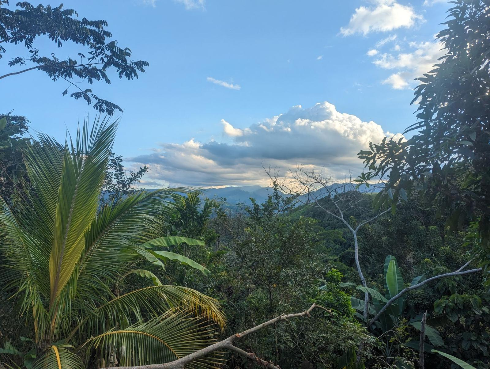
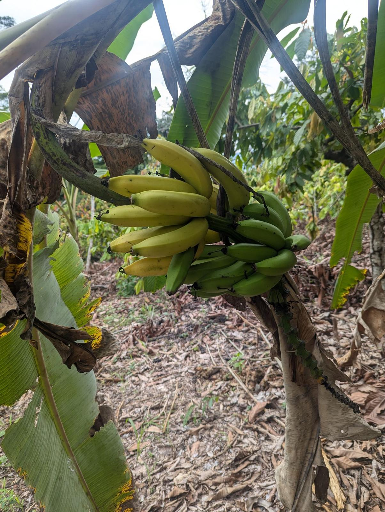
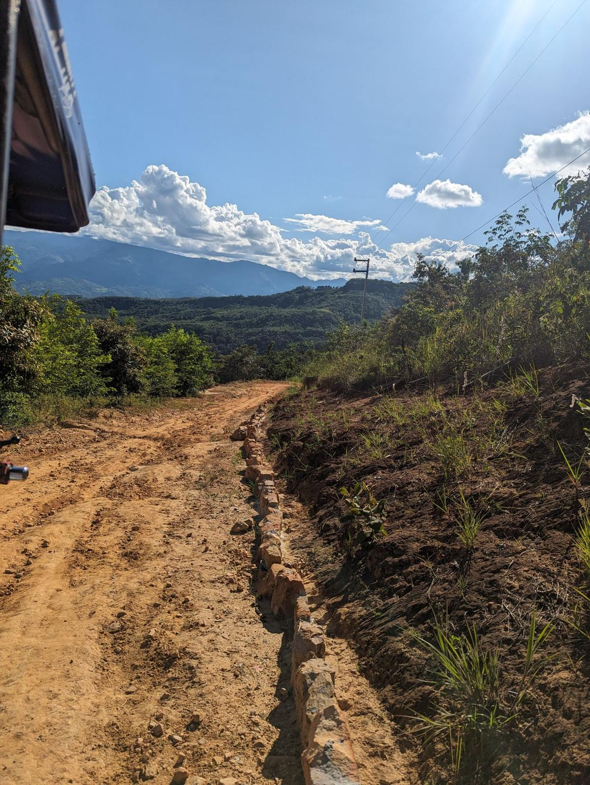
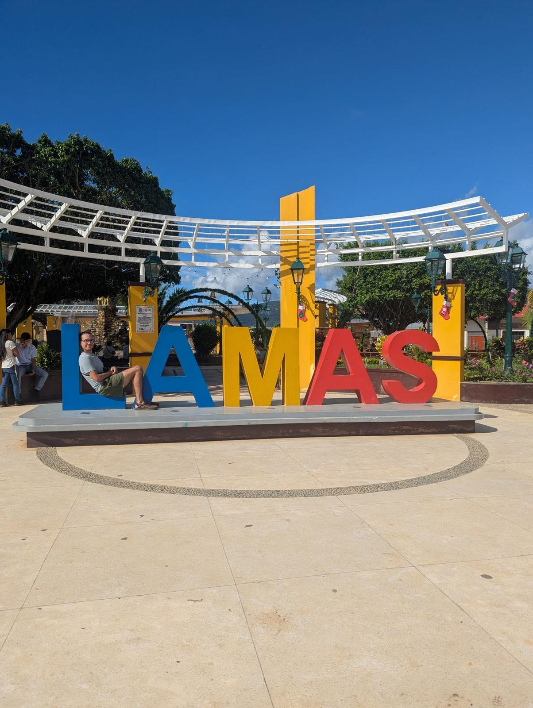

FAQ
Questions people ask
Buying property in a foreign country brings up a lot of questions, and a lot of understandable nerves. Here are honest answers to the ones people ask me most. If yours isn't here, just email me.
Owning property in Peru
Can a foreigner really own property in Peru?
Yes. Peru's Constitution gives foreigners the same property rights as Peruvian citizens. You can fully own land, houses and apartments in your own name, with no local partner or corporation required. The one exception is a national-security rule: foreigners can't own property within 50 kilometers of an international border without special government approval. Outside those border zones, which is the vast majority of the country, you own it outright, just like a local.
Whose name goes on the title?
Yours. The property is registered in your name (or a name you designate) with SUNARP, Peru's public property registry. That registration is your legal proof of ownership. My role is to help you get there safely. I never hold title to your property, and I'm never a co-owner. It's yours, plain and simple.
What kinds of property can I buy?
Just about anything you can picture. Small plots in local developments, raw rural land for a homestead, an existing house, farmland with fruit trees already on it, or larger acreage near the rainforest to develop slowly, grow on, or simply hold. Whether you want a weekend escape, a place to eventually retire, a piece of land to build on over the years, or a small long-term investment, there's an option that fits. Tell me the dream and the budget, and I'll tell you honestly what's realistic.
Can I buy land and just leave it as it is?
Yes. Plenty of people buy a piece of the rainforest and simply hold it, trees and all, without building anything. It's still yours, registered in your name, and you can decide later whether to build, grow on it or keep leaving it be.
Safety and your money
How do I know this isn't a scam?
It's the right question to ask, and the fact that you're cautious is exactly the mindset that keeps you safe. Here's how I keep this transparent: I never take your purchase money into my own hands. Every property goes through a licensed Peruvian notary and gets registered with the government (SUNARP) in your name. You'll see the title, the registry, and every document. I'm a real person living here full time, I'll happily video call you, show you my own property, and connect you with past clients. Trust in this business is earned, not claimed, so I'd rather show you than tell you.
Who holds my money during the purchase?
Not me, ever. That's the most important thing to understand. The preferred setup is a fideicomiso, a formal trust held at a Peruvian bank, where your funds sit safely and are only released when the agreed conditions are met. Alternatively, funds can be handled directly through the notary at closing. Either way, your purchase money never passes through my personal accounts. My fee for helping you is completely separate from the money that buys the property.
What if the deal falls through?
Sometimes a deal doesn't work out: the title has a problem, the seller goes quiet, or the land just isn't right once we get a close look. That's actually the system working. Better to walk away before you've bought than to be stuck after. This is exactly why part of my fee is a base fee for the scouting work itself, separate from a success fee at closing. The scouting has real value even when it saves you from a bad purchase. We'll always talk through your options before any money moves.
Are listings guaranteed to be available?
No. There's no central listings site here, sellers can be slow to respond, and good properties get bought quickly. Any property or price I show you is subject to change until it's under a signed agreement.
The buying process
Do I have to travel to Peru to buy?
You don't have to, though I always encourage a visit if you can, because seeing it for yourself is part of the joy. If you can't come, the whole purchase can be done remotely. You grant a limited, specific power of attorney (signed before a notary in your country, apostilled, and translated) that lets your representative here sign only for the exact property and price you approve. I scout the land, send you detailed photos and video, talk to the owners and neighbors, and walk you through every step by call. And remember, Peru is closer than most people think. A visit is often just a normal flight away.
Do I need to speak Spanish?
Not at all. Handling the Spanish, and the local customs, is a big part of what I do for you. I speak the language, know how deals actually get done here, and can talk to sellers and neighbors as an equal. That's often the difference between getting the real local price and getting the inflated tourist price. You focus on what you want; I'll handle the conversations.
How long does the whole process take?
It depends on how quickly we find the right property and whether you're buying remotely. Once we've found the one and the title checks out, the actual purchase and registration can move fairly quickly, often a matter of weeks. The search itself is the variable part. Good properties at good prices get bought fast here, so being ready to act when the right one appears matters more than rushing the search.
How do I get started?
The first step is just a conversation, and it's free. We'll talk about what you're looking for, where, and your budget, and I'll give you an honest read on what's possible, with no pressure and no obligation. If it feels like a fit, we take it from there one step at a time. Reach out through the contact form or at info@buylandinperu.com and let's talk about the piece of Peru you've been dreaming about.
Costs
How much does the property itself cost?
Far less than most people expect. That's the whole appeal. Prices vary enormously by region and how rural you go, but small plots in local developments on the edge of town can start in the low thousands of dollars, while larger rural parcels for a homestead can be surprisingly affordable per acre. Big cities like Lima cost much more, on par with global city prices. The sweet spot I love is the smaller cities and the countryside, where your money goes remarkably far. I'll give you honest, realistic numbers for whatever you're dreaming about. For more detail, see Peru property prices: the data and the reality.
What do your services cost?
My pricing is built to match the effort involved, so you're never overcharged for something simple. At the lighter end, help buying a small plot I already know in a local development is a modest flat fee, from $500. A full search with multiple trips, comparisons and negotiation starts from $1,000, and a full-service purchase where I handle everything end to end starts from $2,000. The larger tiers are a base fee up front once you're serious, plus a smaller success fee at closing. We agree on everything in writing before any work begins. No surprises. See services & pricing.




Still have a question?
Email me. I read and answer every message myself.
Or email me directly:
info@buylandinperu.com